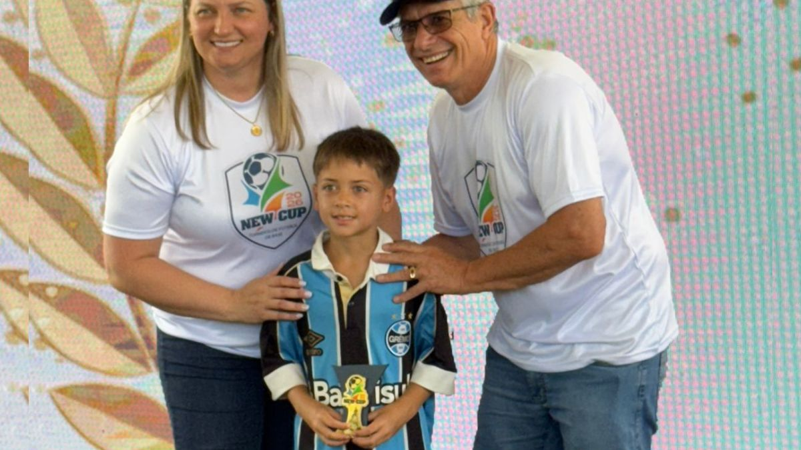

Lucas Azambuja
Lukinhas10 · Meio-campo · Canhoto · Futebol de campo e futsal
Registros públicos de formação no Grêmio e futsal, com gol e assistência na final do Gre-Nal da Copa Base Baby 2026.
Jornada em 3 marcos
Resumo baseado em informações já publicadas. Clique no histórico completo para conferir os detalhes.
- Campo e futsalInício da prática esportiva e experiências em diferentes modalidades.
- Copa Base BabyRegistro de gol e assistência na vitória por 2 a 1 sobre o Internacional.
- AcompanhamentoVídeos, torneios e registros detalhados no site do atleta.
Parceiros, audiência e funil de patrocínio
Marcas e projetos relacionados
Referências públicas; condição comercial e período de apoio devem ser confirmados com os responsáveis.
Presença digital e resultados
Os números reais de Instagram e de vendas somente aparecerão após acesso autorizado e validação da origem dos dados.
Sem dados simulados. O perfil público da rede social não permite atribuir automaticamente seguidores e alcance a uma campanha.
Funil de patrocínio
Modelo de mensuração para futuras campanhas: visitas → cliques → cupons → vendas confirmadas.
O contato comercial é mediado pela equipe e pelos responsáveis. Nenhum pagamento ou compra de direitos econômicos de atletas ocorre por esta página.